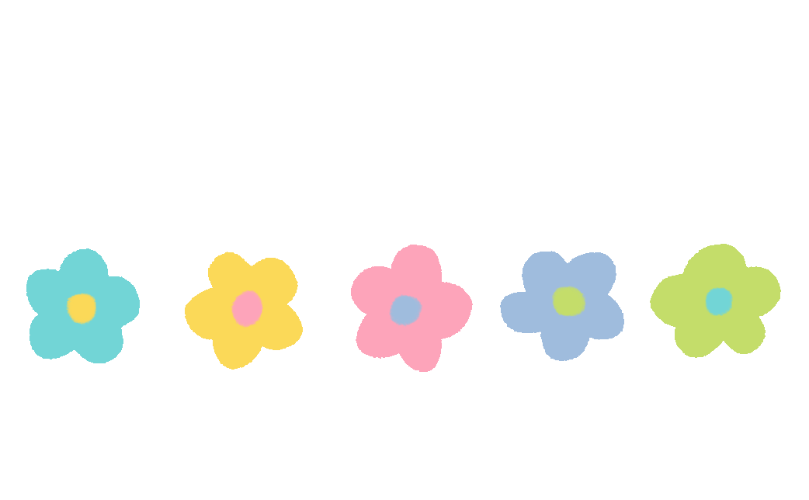

Welcome To My Website!

Hello, my name is Salma Difina Putri. This is basically a website where I put my basic info that I think you'll like to know! Such as my likes and dislikes, hobbies, and many more! While you are here, don't forget to be happy and drink your water! Cheers!
Basic Info
So, my name is Salma Difina Putri. I live in Bogor and currently study in SMK-SMAK Bogor. I'm on eleventh grade, it's XI-8. I was born in Jakarta, 28 August 2004.
Likes
I love poetry and philosophy. I also like to draw sometimes even if I'm not that good at it. I watched many random vids on YouTube too. I usually spend my time reading a book, watch movies, and singing (don't expect much). I also sometimes write, but not really.
Dislikes
I hate many things, to be honest. Basic criteria of cruelty; people who cannot be kind to others, people who judge too much and unprovoked, I hate racism and such. I also am a picky eater, I dislikes seafood so much. I also hate jumpscare and people who are ignorant. I'm trying my best too.
My Faves
I love the 1975, Arctic Monkeys, Stray Kids, Lorde, Taylor Swift, The Neighbourhood. I also adore Jane Austen as a great writer for centuries. Whoever invented pastel colour deserve an award, to be honest.

My Thoughts on Online Learning During Pandemic
At the beginning of the pandemic, the info provided is time off. I made many plans to study on holidays, but it was extended to this day. During those times, I initially struggled to set a schedule. Often forget time and feel less productive. But as I got older, I became accustomed to this pandemic. More can make the most of time too.
The amount of free time given makes me have more time to think. It is very difficult to avoid negative thinking during a pandemic. I use the free time to start a lot of new hobbies and try things when I have free time. Plus participate in organization and socialize, so that I can reduce my free time.
There are many difficulties and conveniences that I face thanks to this pandemic. But I believe that every thing can do us good, so I try to accept everything with a positive thought that things will improve. I hope this pandemic ends soon and abandons the blessings and lessons it provides.